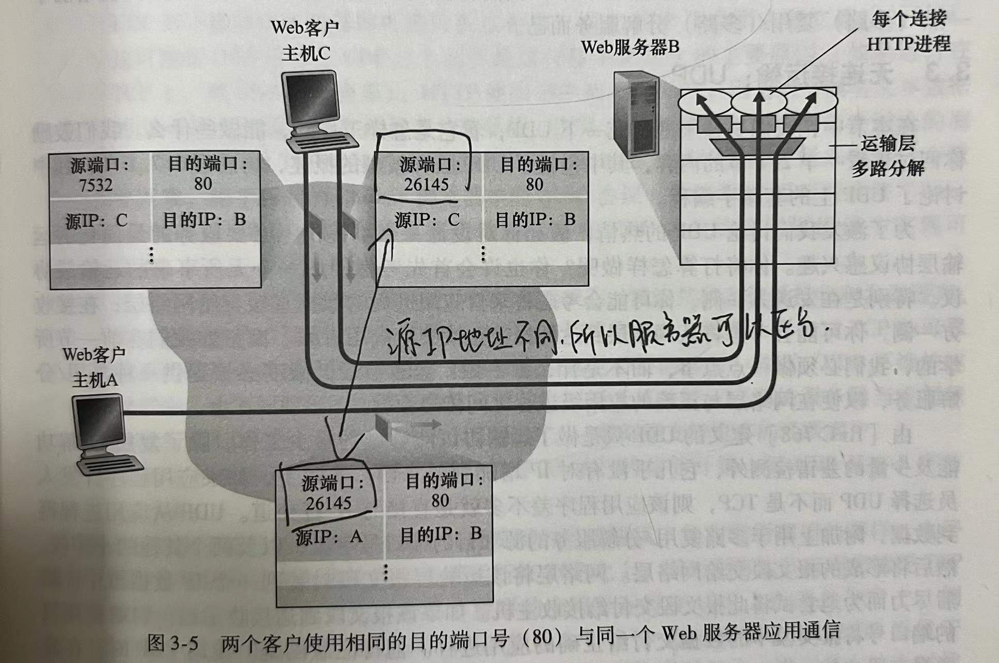

计算机网络-第3章 运输层
3.1 概述
运输层协议为运行在不同主机上的应用进程之间提供了逻辑通信功能。
运输层协议是在端系统中而不是在路由器中实现的。
在发送端，运输层将从发送应用程序进程接收到的报文转换成运输层报文段，然后将报文段传递给网络层，网络层将其封装成网络层数据报并向目的地发送。
网络路由器仅作用于该数据报的网络层字段，即它们不检查封装在运输层报文段的字段。
3.1.1 运输层和网络层的关系
网络层提供主机之间的逻辑通信；运输层为运行在不同主机上的进程之间提供逻辑通信。
运输协议能够提供的服务常常受制于底层网络层协议的服务模型。如果网络层协议无法为主机之间发送的运输层报文段提供时延或宽带保证的话，运输层协议也就无法为进程之间发送的应用程序报文提供时延或带宽保证。
3.1.2 因特网运输层概述
因特网为应用层提供了两种运输层协议：UDP和TCP。
UDP和TCP最基本的责任是，将两个端系统间IP的交付服务，扩展为运行在端系统上的两个进程之间的交付服务。
将主机间交付扩展到进程间交付被称为运输层的多路复用和多路分解。
3.2 多路复用和多路分解
多路复用和多路分解服务是所有计算机网络都需要的。
在目的主机，运输层从网络层接收报文段。运输层负责将这些报文段中的数据交付给在主机上运行的应用程序进程。
一个进程有一个或多个套接字。接收主机中的运输层实际上不是直接将数据交给进程，而是交给一个中间的套接字。
为了将运输层报文段定向到适当的套接字，每个运输层报文段中具有几个字段。
- 在接收端，运输层检查这些字段，标识接受套接字，从而将报文段定向到该套接字。将运输层报文段中的数据交付到正确的套接字就是多路分解。
- 在源主机从不同套接字中收集数据块，并为每个数据块封装上首部信息从而生成报文段，然后将报文段传递到网络层，这称为多路复用。
运输层多路复用要求：
- 套接字有唯一标识符。
- 每个报文段有特殊字段来指示该报文段所要交付到的套接字：即源端口号字段和目的端口号字段。
所以运输层是怎么实现分解服务的：在主机上每个套接字能够分配一个端口号，当报文段到达主机时，运输层检查报文段中的目的端口号，并将其定向到相应的套接字。然后报文段中的数据通过套接字进入其所连接的进程。
3.2.1 无连接的多路复用和多路分解
假定在主机A中的一个进程具有UDP端口19157，要发哦是那个一个应用程序数据块给位于主机B中的另一进程，具有UDP端口46428。
主机A中的运输层创建一个运输层报文段，其中包括应用程序数据、源端口号19157、目的端口号46428和两个其他值。
然后，运输层将得到的报文段传递到网络层，网络层将其封装到一个IP数据报中，并尽力而为的交付给接收主机。
报文段到达主机B后，接收主机运输层检查该报文段中的目的端口号，并将该报文段交付给端口号46428所标识的套接字。
一个UDP套接字是由一个二元组全面标识的，该二元组包含一个目的IP地址和一个目的端口号。因此，如果两个UDP报文段有不同的源IP地址和/或源端口号，但具有相同的目的IP地址和目的端口号，那么这两个报文段将通过相同的目的套接字被定向到相同的目的进程。
源端口号的作用：源端口号用作返回地址的一部分，即当B需要回发一个报文给A时，B到A的报文段中的目的端口号就会从A到B的报文段中源端口号中取值。
3.2.2 面向连接的多路复用与多路分解
TCP套接字是由一个四元组标识的：源IP地址、源端口号、目的IP地址、目的端口号。
特别与UDP不同的是，两个具有不同源IP地址或源端口号的到达TCP报文段将被定向到两个不同的套接字，除非TCP报文段携带了初始创建连接的请求。
服务器主机可以支持很多并行的TCP套接字，每个套接字与一个进程相联系，并由其四元组来标识每个套接字。当一个TCP报文段到达主机时，所有4个字段被用来将报文段定向（分解）到相应的套接字。

因为主机A选择源端口号时与主机C互不相干，因此可以分配相同的源端口号26145。 但服务器B仍然能够正确分辨这两个具有相同源端口号的连接，因为两条连接有不同的源IP地址。
3.2.3 Web服务器与TCP
连接套接字和进程之间并非总是一一对应的。
当今的高性能Web服务器通常只使用一个进程，但是为每个新的客户连接创建一个新线程（线程可被看作是一个轻量级的子进程）。
如果客户与服务器使用持续HTTP，则在整条连接持续期间，客户与服务器之间经由同一个服务器套接字交换HTTP报文。
如果客户与服务器使用非持续HTTP，则对每一对请求/响应，都创建一个新的TCP连接并在随后关闭，这种套接字的频繁创建和关闭会严重影响服务器的性能。